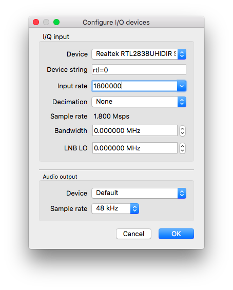
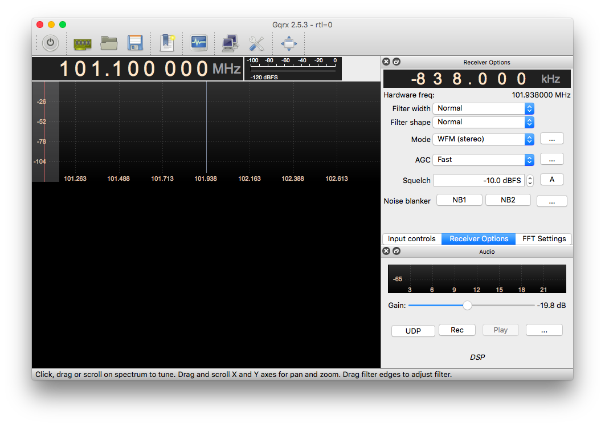
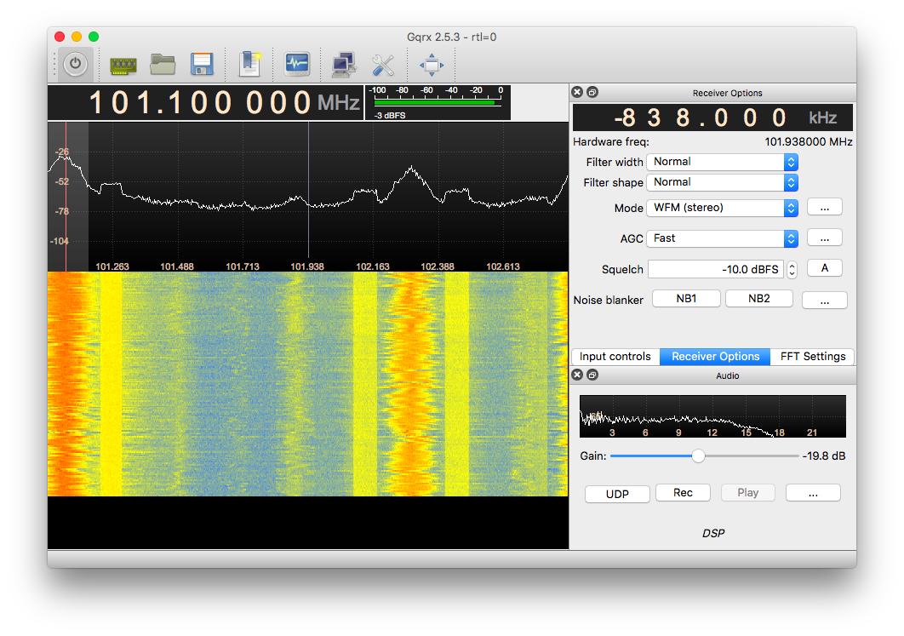
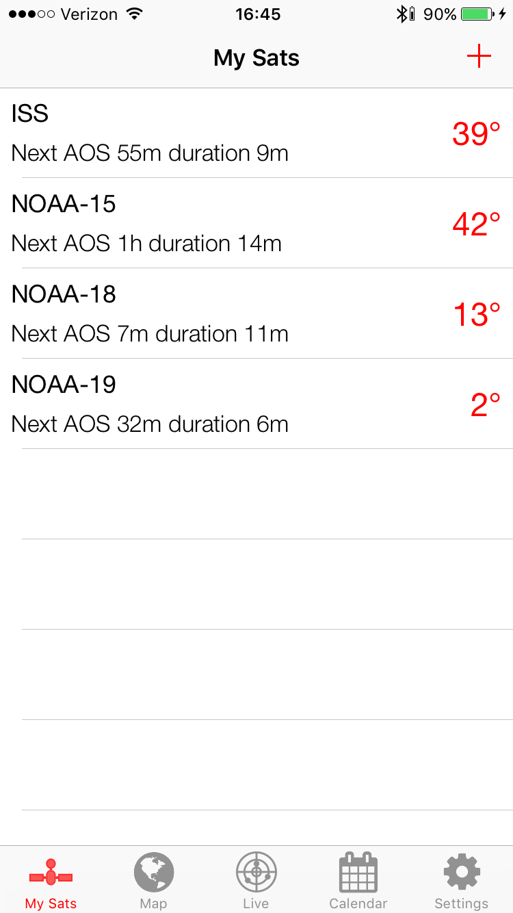
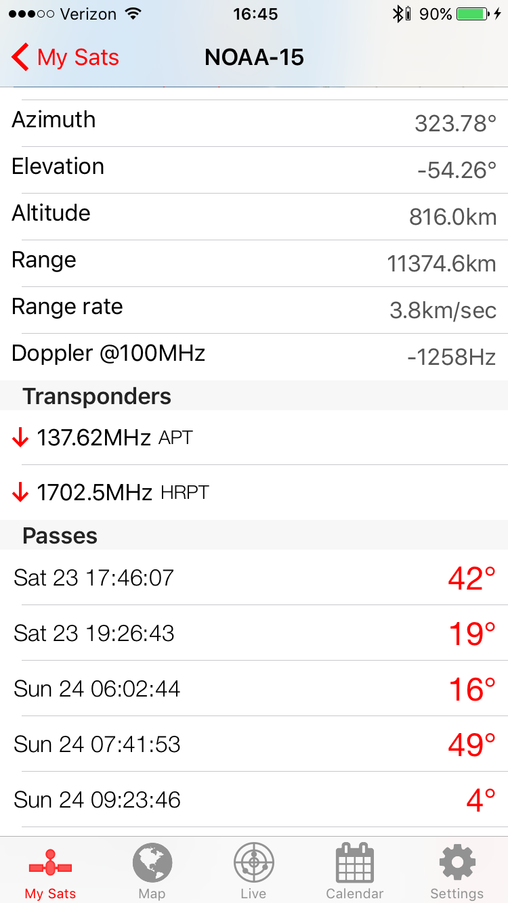
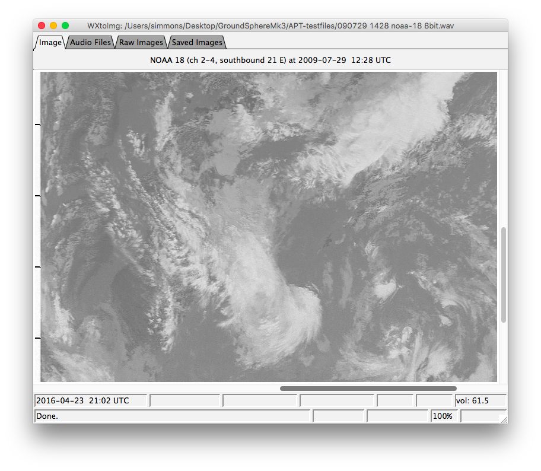

Project Notebook for JRS Build for ENG-02 (Listening to satellites for 30 dollars build)
Added by J. Simmons over 6 years ago
Running notes and commentary of ISS signal reception based on Listening to satellites for 30 dollars.
Replies (13)
RE: Project Notebook for JRS Build for ENG-02 (Listening to satellites for 30 dollars build) - Added by J. Simmons over 6 years ago
My first step is to go through the blog post and generate BoMs (bills of materials) for the hardware and software to make sure I understand what I need and as part of creating simpler to follow instructions.
Hardware BoM¶
| Item # | Description |
|---|---|
| GS-Mk3_ENG-02.HW01 | NooElec NESDR Mini 2 SDR & DVB-T USB Stick |
| GS-Mk3_ENG-02.HW02 | Unspecified antenna - "sometimes a simple wire antenna is enough for great results" (see note 1) |
| GS-Mk3_ENG-02.HW03 | Mac or Linux Laptop (OS choice slightly modifies software BoM) |
Note 1: From Similar Projects research, How to Hear the ISS recommends a 1/4 wave whip antenna and a 1/4 wave ground plane for receiving signals from ISS. Other recommendations can be found on the image processor website.
That looks like it. Not much in the way of required hardware (beyond a pre-existing laptop or pc), but that is not surprising given the goal is to receive satellite signals for under $30.
Software BoM¶
| Item # | Description | OS X Software | Linux Software |
|---|---|---|---|
| GS-Mk3_ENG-02.SW01 | Software Receiver (see note 2) | GQRX | GQRX |
| GS-Mk3_ENG-02.SW02 | Audio Capture Tool | Audacity | Audacity |
| GS-Mk3_ENG-02.SW03 | Audio Router | Soundflower | PulseAudio |
| GS-Mk3_ENG-02.SW04 | Satellite Pass Predictor | (see note 3) | (see note 3) |
| GS-Mk3_ENG-02.SW05 | Image Processor | WXtoImg | WXtoImg |
Note 2: Need to verify supported hardware for the software receiver.
Note 3: Blog post promotes author's iOS app, SatSat. Going to look at other options, including web sites.
Note, all of this software is free, but not all of it is open source apparently. I need to review a few more details. Still, after initially capturing the signal, it looks like the next trick is making all of the software run end to end to give you an image. I think I will work the demo in two stages.
- Live reception of satellite signal to laptop speakers
- Repeating step 1 plus audio capture and processing
Next step will be to check where I am in terms of meeting the hardware and software BoMs.
RE: Project Notebook for JRS Build for ENG-02 (Listening to satellites for 30 dollars build) - Added by Aaron Harper over 6 years ago
Regarding Note 3:
I recommend GPredict http://gpredict.oz9aec.net/ for satellite tracking. Besides being free and GPL, it supports Debian, Ubuntu, Fedora Core, Suse, Mandriva, Tiny Core, BSD, Mac OS X, and Windows. It directly interfaces with a number of radios (https://sourceforge.net/p/hamlib/wiki/Supported%20Radios) and antenna rotators (https://sourceforge.net/p/hamlib/wiki/Supported%20Rotators).
RE: Project Notebook for JRS Build for ENG-02 (Listening to satellites for 30 dollars build) - Added by J. Simmons over 6 years ago
Thanks @Aaron. GPredict is definitely on my short list. One of the features I am looking for is the ability to key in your location and a satellite ID and get a list of upcoming passes. I seem to recall that is not GPredict's strong suit (I can't quite remember what we did when we last used it, but I thought we fiddled with the clock to look at upcoming passes). No matter what, I will be downloading and evaluating it at some point in this process (since I have iOS devices, I might try out the author's app first in the interest of fully replicating their results).
RE: Project Notebook for JRS Build for ENG-02 (Listening to satellites for 30 dollars build) - Added by J. Simmons over 6 years ago
Tonight I am evaluating where I stand in terms of meeting the requirements for this project based on the hardware and software BoMs. Given the material from my previous post, I expect this process will mostly be about installing software and confirming hardware compatibility.
Hardware Evaluation¶
| Item # | Status |
|---|---|
| GS-Mk3_ENG-02.HW01 | Possess a previous version (NooElec R820T SDR); appears to be supported by the software receiver as "Osmocom rtl-sdr and rtl_tcp", may need to adjust the buflen parameter |
| GS-Mk3_ENG-02.HW02 | Going to use the included antenna for the first tests; note, I believe I saw an indication that placing the included antenna on a steel surface (like a car body - it has a magnetic base) can improve the signal strength by providing a ground plane, so I may add a steel panel to my tests |
| GS-Mk3_ENG-02.HW03 | Possess a MacBook Air running OS X: El Capitan |
Software Evaluation¶
| Item # | Status |
|---|---|
| GS-Mk3_ENG-02.SW01 | Installed v. 2.5.3-2; Easily detected SDR dongle, received local FM radio station, and used built in record audio feature to capture the received audio (demo video/audio coming tomorrow) |
| GS-Mk3_ENG-02.SW02 | Installed v. 2.1. |
| GS-Mk3_ENG-02.SW03 | So, Soundflower has moved to GitHub and undergone a couple of handoffs. I also had an old version. Before proceeding, I uninstalled the old version per instructions on GitHub. Based on current release notes, the controller app (SoundflowerBed) is retired. The alternative tool chain, Loopback, is not free. Given the software receiver software has a file save feature, going to skip this element for now and see how things go. |
| GS-Mk3_ENG-02.SW04 | Going to start by using SatSat to replicate original results and then investigate alternatives |
| GS-Mk3_ENG-02.SW05 | Installed v. 2.10.11 (note, in OS X the pkg file is unsigned, so I had to override the security settings on my MacBook); the blog post author posted a link to a soundcloud file of a satellite pass, so I tried to download it and run it through WXtoImg, but that did not work (the image was very distorted, I think it was caused by all of the audio processing - converted to mp3 on soundcloud then back to wav on my MacBook). |
So, looks like I have most or all of the parts I need. I will capture some tests on video and images tomorrow and post those. I will also start looking for satellite passes to try and observe and work through the actual operation instructions.
RE: Project Notebook for JRS Build for ENG-02 (Listening to satellites for 30 dollars build) - Added by J. Simmons about 6 years ago
With the software installed, it is time to test the individual elements to make sure things are working before running an integrated test. Based on the initial smoke tests during software installation, there are three key elements to test.
- GS-Mk3_ENG-02.SW01 - software receiver (GQRX) - this tool connects to GS-Mk3_ENG-02.HW01 (the SDR) to receive the radio signals and includes a built-in audio recording function, so we may be able to skip the requirements for GS-Mk3_ENG-02.SW02 (audio capture tool) and GS-Mk3_ENG-02.SW03 (audio router).
- GS-Mk3_ENG-02.SW04 - satellite pass predictor (tbd) - for now I am using the author's iOS app (SatSat), but it will still be good to test it out some and make sure I can use it
- GS-Mk3_ENG-02.SW05 - image processor (WXtoImg) - going to use sample audio file(s) from the internet to verify the steps required to use WXtoImg
Testing GQRX¶
- Connect the antenna to the SDR
- Plug in SDR
- Launch GQRX
- Configure the SDR
- Select File>I/O Devices, the Configure I/O devices dialog will open
- Click the Device drop down and select the matching item (typically ending in 00000001)
 - Click the OK button
- Enter the frequency in the frequency field in the upper left corner of GQRX to set the frequency to a test source. I am using a local FM radio station (e.g. 101.100 000 MHz)
 - Click the Mode drop down and select the appropriate mode (e.g. WFM (stereo) for a local FM radio station)
- Click the Power button (in the far upper left corner of GQRX) to start the receiver
 - Test the audio recording feature
- Click the Rec button (in the far lower right of GQRX) to start capturing audio
- Click the Rec button again (in the far lower right of GQRX) to stop capturing audio
- Click the Power button to stop the receiver
- Browse the file system to the user's home directory and look for a new wav file (e.g. gqrx_20160423_202958_101100000.wav)
- Play the file back to confirm it recorded properly
Note, GQRX has a configuration save/load feature. This feature should be investigated further to simplify reproduction of known configurations for specific satellites.
Testing SatSat¶
This test was conducted after an inital smoke test. During the smoke test initial configuration steps were conducted, including adding satellites of interest. That process is straight forward and will not be covered in these steps.
Note, be sure to go to the settings tab and enable the Use GPS option to ensure data is for your current location.
- Start SatSat on your iOS device, the My Sats tab will display showing your list of satellites; each satellite will include the next Acquisition of Signal (AOS), when you can start receiveing signals from the satellite, and the duration of the pass
 - Click on one of the satellite entries to see more details about that satellite (inlcuding frequency) and several upcoming AOS events

Testing WXtoImg¶
Since we have not captured our own data, this test will use the sample files from Fred van den Bosch's website.
- Download the sample files
- Extract the wav files from the zip file
- Launch WXtoImg
- Select File>Open Audio File
- Browse to one of the sample audio files, select the file, and click the Open button
- Wait while the audio file is processed, an image should appear
 - You can change the rendering style by selectinging different options in the Enhancements menu
GQRX_Config_IO_Devices.png (63.1 kB)
{kind=link}
GQRX_FM_StationTest.png (300.9 kB)
{kind=link}
GQRX_SetFrequency.png (126.6 kB)
{kind=link}
SatSat_MySats.png (85.2 kB)
{kind=link}
SatSat_SatelliteDetails.png (141.6 kB)
{kind=link}
WXtoImg_SampleImage_8bitAudio.png (497.6 kB)
{kind=link}
RE: Project Notebook for JRS Build for ENG-02 (Listening to satellites for 30 dollars build) - Added by J. Simmons about 6 years ago
Video demo of some of the software above.
RE: Project Notebook for JRS Build for ENG-02 (Listening to satellites for 30 dollars build) - Added by J. Simmons about 6 years ago
With the software tested, it is time to sort out the operations instructions (aka - what are the steps to prepare for, setup, conduct, and pack up after capturing an image).
Draft Operations instructions¶
Preparation¶
- Ensure all equipment is ready to use (SDR, antenna, laptop, software) and packed for transport to the location where you will operate the receiver
- Pick a location for the operation (look for somewhere with clear line of site and preferably away from cities to avoid excess RF noise)
- Determine operation opportunities
- Open the satellite prediction pass
- Ensure it is set to use your current location (preferably by GPS fix)
- Select one or more passes from the list of upcoming satellite passes (I am favoring passes with max elevation (Max El) values greater than 45 degrees to reduce the slant range)
- For each pass you selected, record the times for Acquisition of Signal (AOS), Loss of Signal (LOS) plus the downlink frequency (ATP for NOAA satellites, FM voice repeater for ISS, etc); you will need these during the satellite pass
You should now be ready to capture an image from your selected satellite(s)
Setup¶
- Take all equipment to selected location
- Take laptop out and login
- Take out SDR and antenna
- Connect antenna to the SDR
- Plug in the SDR into the laptop's USB port
- Start the software receiver
- Select the SDR module in the software receiver
- Configure the software receiver for the first pass
- Set the receiver frequency to the downlink frequency for the first pass
- Set the mode to Narrow FM
- Set the mode options (accessed in WQRX from the ... button next to the Mode drop down), being sure to click the OK button after setting the following options
- Max Dev: APT 17k
- Tau: OFF
- Verify the SDR is working by powering the software receiver on and off, observing the noise in the waterfall and in the audio output
You should now be ready for your first pass.
Capturing an image¶
- Click the Power button in the software receiver shortly before AOS to start listening for the satellite's signal
- Listen for the satellite's signal over the laptop's speakers or headphones
- Click the Rec button when you hear the signal to start capturing the image data
- Click the Rec button again to stop capturing image data after LOS
- Click the Power button to stop receiving signals
- Use WxtoImg to process the image data (see notes above for specific instructions)
Repeat the software configuration and capture steps for each additional pass.
Pack up¶
- Shutdown all software
- Remove the SDR dongle from the laptop's USB port
- Disconnect the antenna from the SDR
- Pack up the antenna, SDR, and laptop
RE: Project Notebook for JRS Build for ENG-02 (Listening to satellites for 30 dollars build) - Added by J. Simmons about 6 years ago
End to end tests¶
I used the procedures above several times (four I believe, the passes overlapped some) over the weekend. I was not able to capture any video because there was a loud party going on all afternoon when and where I was conducting my tests.
All but one test attempted to receive signals from NOAA satellites (15, 18, and 19). The other test used modified a procedure in an attempt to receive voice traffic from ISS (this was a test that merely took advantage of a timely opportunity and was not necessarily expected to work).
None of the tests resulted in any audio heard over the speakers. During one test I recorded audio but only captured static (the image processor reported no image data was present). Given some of the other resources, and the comment on the original blog post that "sometimes a simple wire antenna is enough for great results" I have to wonder if at least part of the problem is not having a suitable (let alone the "right") antenna.
At this point, I believe I have replicated the material covered in the blog post. Unfortunately, in doing so I have not replicated the results (yet). I propose we consider this PBI done (though the results are only partially successful, see the software tests) and then we create a PBI to "try this again" with the expectation that:
- we review the test instructions with Aaron and/or other ham radio operators who have listened to satellites to ensure we have not missed any details about the operation steps
- repeat the test procedure (with any required corrections) using a more appropriate antenna (to be sourced as soon as the PBI is accepted on a sprint)
I believe this is still worth pursuing as all indications are the poster was able to receive NOAA images for far less than we spent on earlier versions of Ground Sphere. Completing the documentation to replicate these results is valuable both for its own sake (complete instructions are a maker project in their own right) and as a means of informing the stakeholders (along with the link budget) about the direction Ground Sphere should go.
RE: Project Notebook for JRS Build for ENG-02 (Listening to satellites for 30 dollars build) - Added by Ryan McKnight about 6 years ago
Below are screenshots of the errors I encountered when trying to install the SDR software receiver Gqrx on my Mac. I ended up using a different open source software – CubicSDR: https://github.com/cjcliffe/CubicSDR
unnamed-1.png (50.5 kB)
{kind=link}
unnamed.png (56.5 kB)
{kind=link}
RE: Project Notebook for JRS Build for ENG-02 (Listening to satellites for 30 dollars build) - Added by J. Simmons about 6 years ago
Thanks for posting your results, Ryan. I am not sure if I have seen the first error you saw, but that second one shows up in my demo video. I think GQRX can get "stuck" between sessions and when it does it throws that error. In the video I clicked "Yes" and then re-selected my SDR and re-configured it. What happens for you if you click "Yes" and set things up again?
RE: Project Notebook for JRS Build for ENG-02 (Listening to satellites for 30 dollars build) - Added by Ryan McKnight about 6 years ago
Currently at work, so I just installed GQRX on my work MBP to see if I could reproduce the error. Nada. Seems to work fine. My personal computer won't install or open GQRX. Clicking "Yes" just quits the setup.
Home MBP is Mountain Lion. Work one is El Capitan. Not sure if the OS is the issue or something else. Might need a different version of GQRX for the older OS. Got the DMG file from here: http://gqrx.dk/download
RE: Project Notebook for JRS Build for ENG-02 (Listening to satellites for 30 dollars build) - Added by J. Simmons about 6 years ago
The OS version is almost certainly the issue. I am running El Capitan on my MBA and a quick Google search shows Mountain Lion is old (real old, released July 25, 2012). I doubt the GQRX developers are supporting OS versions that old.
RE: Project Notebook for JRS Build for ENG-02 (Listening to satellites for 30 dollars build) - Added by Ryan McKnight about 6 years ago
Just double-checked my personal MBP. Actually have Mavericks installed–June 2014 version. Still probably the same issue, but it'll be important to list the oldest supported OS versions in the minimum requirements for the build.
(1-13/13)